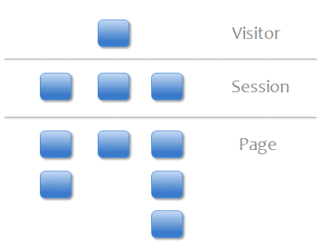

©2011 Google -
Code Home -
Terms of Service -
Privacy Policy -
Site Directory
Google Code offered in:
English -
Español -
日本語 -
한국어 -
Português -
Pусский -
中文(简体) -
中文(繁體)
-
-
 Overview
Overview
-
Tracking Code
Management API (Labs  )
)
)Export API (Labs )
)-
- Home
- Dimensions & Metrics
- Libraries & Examples
-
Changelog & Issues
Website Optimizer (Labs )
More Google Analytics resource links
)Custom Variables
Custom variables are name-value pair tags that you can insert in your tracking code in order to refine Google Analytics tracking. With custom variables, you can define additional segments to apply to your visitors other than the ones already provided by Analytics. This document describes custom variables and how you can set them up.
Overview
You'll get the most out of custom variables if you understand the basic visitor interaction model used in Google Analytics. In this model, the visitor interacts with your content over a period of time, and the engagement with your site is broken down into a hierarchy.
The diagram illustrates this model for a single visitor to your site, where each block represents the number of user sessions and interactions from that particular user.
Each level in this model is defined as follows:
- Visitor—the client that visits the site, such as the browser or mobile phone operated by a person.
- Session—the period of time during which the visitor is active on the site.
- Page—activity
on the user's behalf which sends a GIF request to the Analytics servers.
This is typically characterized by a pageview, but it can include:
- a pageview
- an event (e.g. click on a movie button)
These three levels of interaction make up the scope of visitor engagement. This is important to custom variables because each custom variable is restricted to a particular scope. For example, you might want to know the number of sessions where visitors removed an item from their shopping cart. For that particular case, you would define the custom variable to the session level, so that the entire session for that visitor is flagged as one in which items were removed from online carts.
Using Custom Variables
Because you can set up a variety of custom variables to track user activity for your site, you'll most commonly create your own JavaScript utilities to manage them. Your script will use the basic method for creating a custom variable as follows:
_setCustomVar(index, name, value, opt_scope)
This method accepts four parameters:
- index—The slot for the custom variable. Required. This is
a number whose value can range from
1-5, inclusive. A custom variable should be placed in one slot only and not be re-used across different slots. - name—The name for the custom variable. Required. This is a string that identifies the custom variable and appears in the top-level Custom Variables report of the Analytics reports.
- value—The value for the custom variable. Required. This is
a string that is paired with a name. You can pair a number of values with
a custom variable name. The value appears in the table list of the UI for
a selected variable name. Typically, you will have two or more values for
a given name. For example, you might define a custom variable name
genderand supplymaleandfemaleas two possible values. - opt_scope—The scope for the custom variable. Optional. As
described above, the scope defines the level of user engagement with your
site. It is a number whose possible values are
1(visitor-level),2(session-level), or3(page-level). When left undefined, the custom variable scope defaults to page-level interaction.
The following code snippet illustrates how you might set a custom variable
for tracking those visits where users
removed items from their shopping cart. Here, the _setCustomVar() method
is called just before a _trackEvent() method, so that it gets
delivered in the GIF request sent by the _trackEvent() method.
It uses the name Items Removed with the value Yes in
order to define that activity from the website users. In addition, it would
make sense to also set a default custom variable
for Items Removed and No. In this way, you would
have a count of visits where items were removed from shopping carts, and a
count of visits that didn't include item removal.
Async Snippet (recommended)
_gaq.push(['_setCustomVar',
1, // This custom var is set to slot #1. Required parameter.
'Items Removed', // The name acts as a kind of category for the user activity. Required parameter.
'Yes', // This value of the custom variable. Required parameter.
2 // Sets the scope to session-level. Optional parameter.
]);
_gaq.push(['_trackEvent',
'Shopping', // category of activity
'Item Removal', // Action
]);
 Traditional (ga.js) Snippet
Traditional (ga.js) Snippet
Once you have set up custom variables, you can use the
_deleteCustomVar(index)
method to remove your custom variables.
Example Use Cases
Custom variables can be implemented in many different ways, depending upon your website model and business needs. The examples explore different use cases, where each one illustrates a different level of scope:
Page-level Custom Variables
Use page-level custom variables to define a collection of page-level activities by your users.
For example, suppose you manage the website for an online newspaper, where visitors view many different articles. While it is easy to determine which particular articles are the most popular, you can now also use custom variables to determine which sections of the newspaper are popular. This is done by setting a custom variable at the page level for each article, where the section for that article is set as a custom variable. For example, you might have sections such as Life & Style, Opinion, and Business. You could set a custom variable to track all your articles by section.
Async Snippet (recommended)
_gaq.push(['_setCustomVar',
1, // This custom var is set to slot #1. Required parameter.
'Section', // The top-level name for your online content categories. Required parameter.
'Life & Style', // Sets the value of "Section" to "Life & Style" for this particular aricle. Required parameter.
3 // Sets the scope to page-level. Optional parameter.
]);
Traditional (ga.js) Snippet
Let's continue with this example and suppose that you not only want to tag the section for a particular article, but also the sub-section. For example, the Life & Style section for your newspaper might have a number of sub-sections as well, such as Food & Drink, Fashion, and Sports. So, for a particular article, you can track both the section and the sub-section. You could set an additional custom variable to track all your articles by sub-section.
Async Snippet (recommended)
_gaq.push(['_setCustomVar',
2, // This custom var is set to slot #2. Required parameter.
'Sub-Section', // The 2nd-level name for your online content categories. Required parameter.
'Fashion', // Sets the value of "Sub-section" to "Fashion" for this particular article. Required parameter.
3 // Sets the scope to page-level. Optional parameter.
]);
Traditional (ga.js) Snippet
In this example, you set two simultaneous page-level custom variables for a single page. For any single page, you can track up to five custom variables, each with a separate slot. This means that you could assign 3 additional custom variables on this same page. For all articles on your website, you can set up an array of page-level custom variables to track them by a variety of sections and sub-sections. For more information on how to correctly use page-level custom variables, see Usage Guidelines below.
Session-level Custom Variables
Use session-level custom variables to distinguish different visitor experiences across sessions.
For example, if your website offer users the ability to login, you can use a custom variable scoped to the session level for user login status. In that way, you can segment visits by those from logged in members versus anonymous visitors.
Async Snippet (recommended)
_gaq.push(['_setCustomVar',
1, // This custom var is set to slot #1. Required parameter.
'User Type', // The name of the custom variable. Required parameter.
'Member', // Sets the value of "User Type" to "Member" or "Visitor" depending on status. Required parameter.
2 // Sets the scope to session-level. Optional parameter.
]);
Traditional (ga.js) Snippet
Suppose you wanted to track both the user type and whether a purchase attempt occurred for a given session. If we assume that every page offers the user the ability to login, we would want to reserve slot #1 for the User Type custom variable and use another slot for the purchase attempt:
Async Snippet (recommended)
_gaq.push(['_setCustomVar',
2, // This custom var is set to slot #2. Required parameter.
'Shopping Attempts', // The name of the custom variable. Required parameter.
'Yes', // The value of the custom variable. Required parameter.
// (you might set this value by default to No)
2 // Sets the scope to session-level. Optional parameter.
]);
Traditional (ga.js) Snippet
Visitor-level Custom Variables
Use visitor-level custom variables to distinguish categories of visitors across multiple sessions.
For example, if your websites offers premium content to paying subscribers, you can set a visit-level custom variable to analyze which users are paying members, at which level of payment, and which users are using the free level of service for the site. You would likely set this custom variable as a one-time function, since the value would persist across the life of the visitor cookie.
Async Snippet (recommended)
_gaq.push(['_setCustomVar',
1, // This custom var is set to slot #1. Required parameter.
'Member Type', // The name of the custom variable. Required parameter.
'Premium', // The value of the custom variable. Required parameter.
// (possible values might be Free, Bronze, Gold, and Platinum)
1 // Sets the scope to visitor-level. Optional parameter.
]);
Traditional (ga.js) Snippet
Usage Guidelines
This section describes the differences between the different types of custom variables and how to use them correctly:
Custom Variable Types
All custom variable types can be defined for a combined length of:
64 bytes inclusive of the name and the value
This means that the length of the string used for the name and the length
of the string used for the value must not exceed 64 bytes.
The table below defines the key characteristics of the different variable types. Bear in mind that there are certain restrictions when the same slots are used by different variables.
| Duration | When sharing a slot with other variables | Number allowed | |
|---|---|---|---|
| Page-level | A single pageview, event, or transaction call. |
The last page-level variable to be called on a page is the one applied to that page. | For any web property (collection of pages), many unique page-level variables can be set and slots can be re-used. Limited only by the number of hits in a given session. For any single page, you can set up to 5 simultaneous custom variables. |
| Session-level | The session of the visitor. |
The last session-level variable called in a session
is the one used for that session. Over-rides any previously-set page-level variable called in the
same session. |
For any web property, you can create as many distinct session-level custom variables as can be defined with a 64-byte key-value pair limit (up to the 50K unique aggregate level limit that exists across GA today). For any given user session, you can set up to 5 session-level variables. |
| Visitor-level | The life of the visitor cookie. |
The last visitor-level variable set for a visitor is the one applied to the visitor. Over-rides previously-set custom variable types called in the same session. |
For any web property, you can create up to five distinct visitor-level variables. |
Mixing Variable Types
When you use multiple page-, session-, and visitor-level custom variables for your web property, you need to carefully determine the re-use of slots. If a situation arises on your website where a page or session-level custom variable uses the same slot at the same time a page-level variable is set, only the session-level (or page-level) variable will be recorded.
The following scenarios illustrate a mix of page, session, and visitor level variables set by activity from a single user on the same browser. In each (1) or (2) indicates a particular slot used by the custom variable and S: indicates the scope.
Case 1 - One visit, three pageviews
| Visit 1 | Page 1 (1) S:page-level section=opinion |
Page 2 (1) S: session-level login=true |
Page 3 (1) S: session-level converted=true |
|---|
The report for visits would be:
- # visits for section=opinion: 0
- # visits for login=true: 0
- # visits for converted=true: 1
Here the final page calls a session-level variable that re-uses the same slot, and it receives precedence.
Case 2 - Three visits
| Visit 1 | Page 1 (1) S:visitor-level gender=male |
|
|---|---|---|
| Visit 2 | (2) S:session-level converted=false |
|
| Visit 3 | (1) S:page-level section=opinion |
Page 2 (2) S:session-level converted=false |
The report for visits would be:
- # visits for section=opinion: 1
- # visits for gender=male: 2
- # visits for converted=false: 2
Here the page-level variable is called after a visitor-level variable that used the same slot. In this order, the visitor-level variable does not over-write the page-level variable.
Case 3 - Three visits, one page
| Visit 1 | Page 1 (1) S:visitor-level gender=male |
|---|---|
| Visit 2 | (2) S:session-level converted=false |
| Visit 3 | (1) S:page-level section=opinion |
The report for visits would be:
- # visits for section=opinion: 1
- # visits for gender=male: 2
- # visits for converted=false: 1
This is a variation from the previous case, where the final visit sets only one CV and re-uses a slot called in the first visit.
Recommended Practices
- Do not use duplicate key names across slots.
- You have up to 5 simultaneous custom variables for use in a single
request (e.g. pageview or event call).
The sum of all your custom varaiables cannot exceed 5 in any given request (i.e. you cannot have 5 visitor and 5 session custom variables set simultaneously). - Call the
_setCustomVar()function when it can be set prior to a pageview or event GIF request.
In certain cases this might not be possible, and you will need to set another_trackPageview()request after setting a custom variable. This is typically only necessary in those situations where the user triggers a session- or visit-level custom var, where it is not possible to bundle that method with a pageview, event, or ecommerce tracking call. - Use a slot matrix to track large numbers of custom variables.
If you have complex tracking requirements, where you have a mix of page- and session-level variables that might collide, you should build a slot matrix to ensure that session-level variables do not inadvertently over-ride page-level variables. - Consider using Event Tracking for certain applications, rather
than custom variables.
For example, suppose you have an online music store and you want to track both login sessions, purchase attempt sessions, and sessions where music samples were played. It would make sense to use Event Tracking to track the number of attempts to play music rather than using session-level variables to achieve this. Here, you could use the 4th value parameter of the event tracking call to pass in session data from your own cookies. - Don't use session-level variables to track behavior you can track
with page-level variables.
For example, suppose you track login status and shopping attempt status by sessions, and your site offers a "Members' special" page that you also want to track. Since a page-level custom variable will show the number of visits to that particular variable, you will already have available the number of visits that included that page at least once.